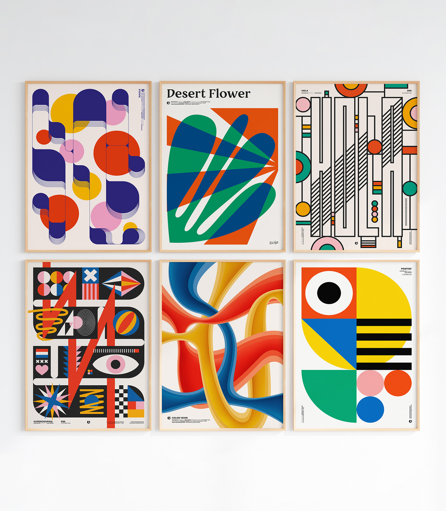
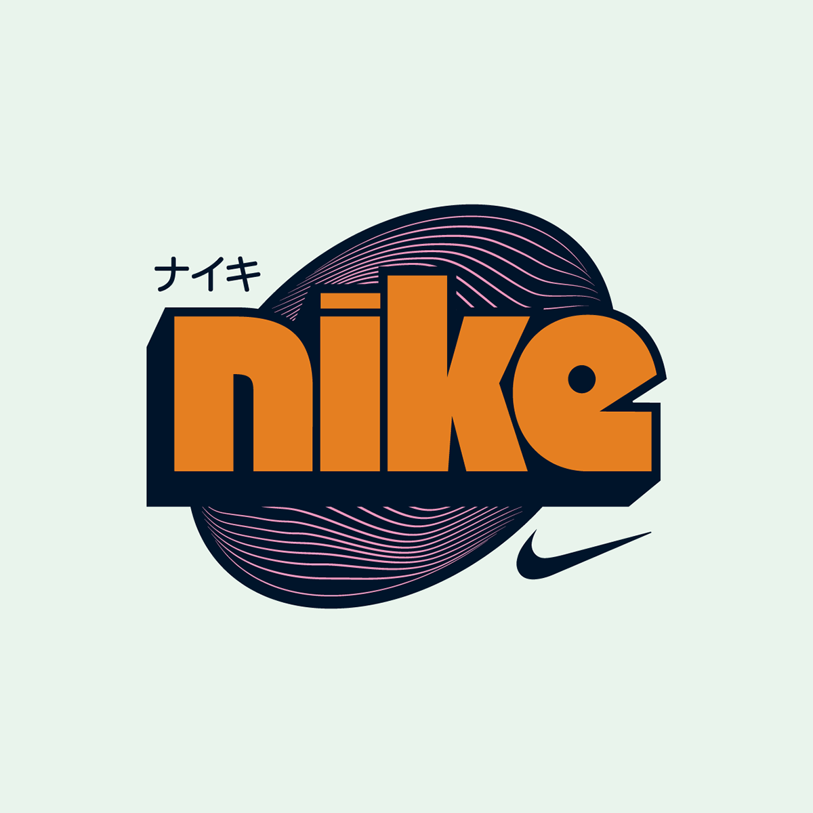
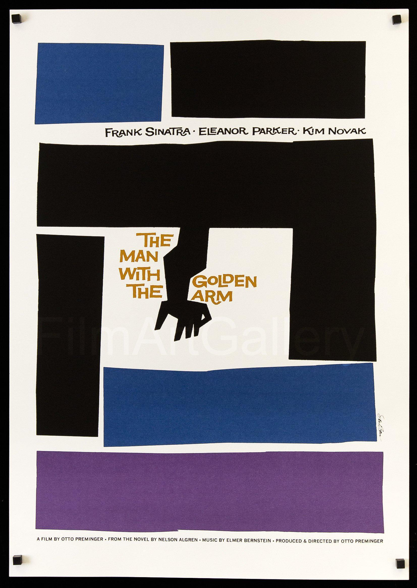

My name is Nathan Siu
These are a few artists who inspire me
VRATISLAV PECKA

Vratislav Pecka's work mainly consists of poster designs. He inspires me because
even though a lot of his work uses simple shapes, they are used effectively. The
colors that he uses feel cohesive and his designs make great use of space. There's
a lot going on in his designs, but they don't feel overwhelming.
---------------------------------------------------------------------
RAFAEL SERRA

Rafael Serra does a lot of typographic work. I like his experimentation with type.
He takes existing logos and redesigns them in a different style. In a lot of
his work, he plays around with the letterforms. There's different orientations,
differing heights, etc.
---------------------------------------------------------------------
SAUL BASS

Saul Bass inspires me because he uses limited color palettes effectively. A lot of
his designs consist of 2 - 3 colors. His designs feel geometric, but also have
this handmade feel because the shapes look as if they've been cut out and pasted
on. He also takes complex shapes and simplifies them down enough to still be
able to distinguish what it is.